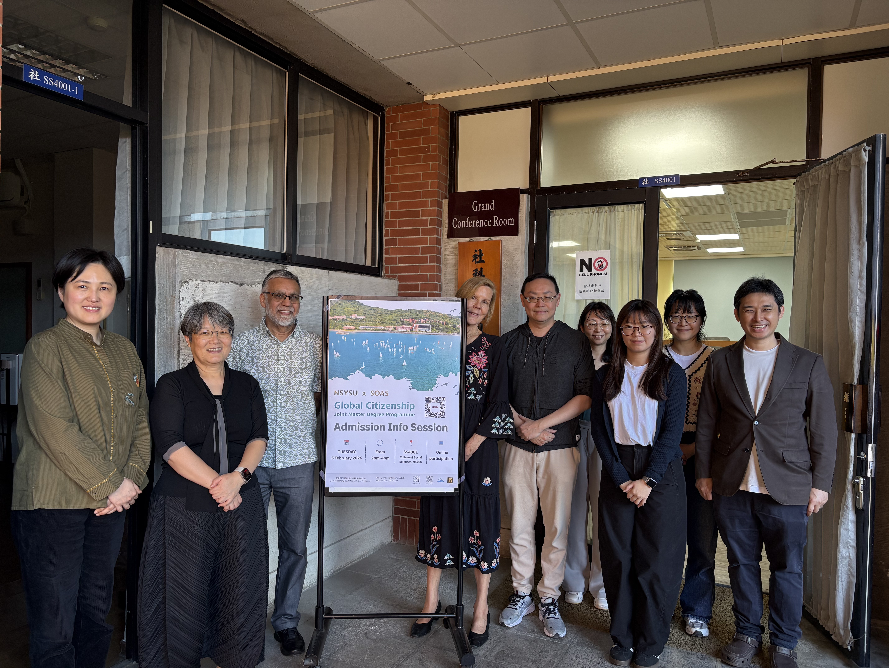
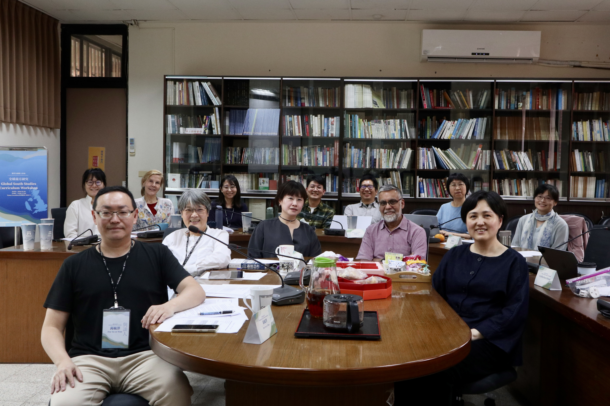
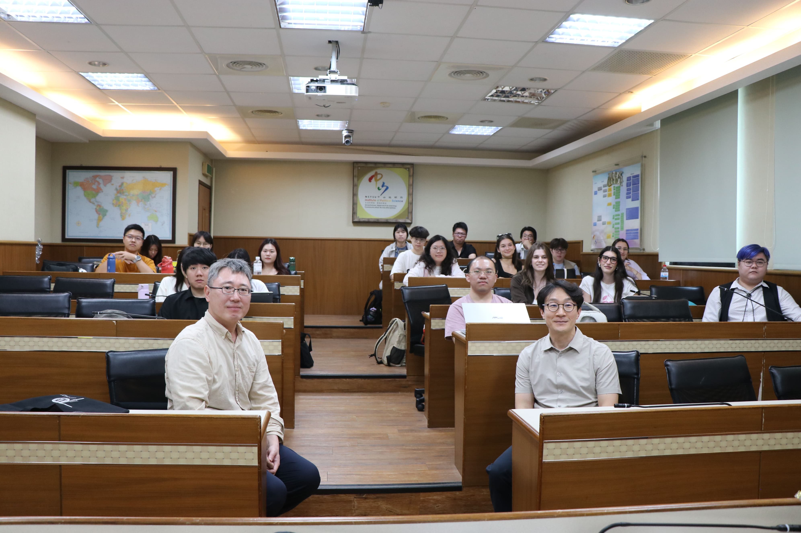
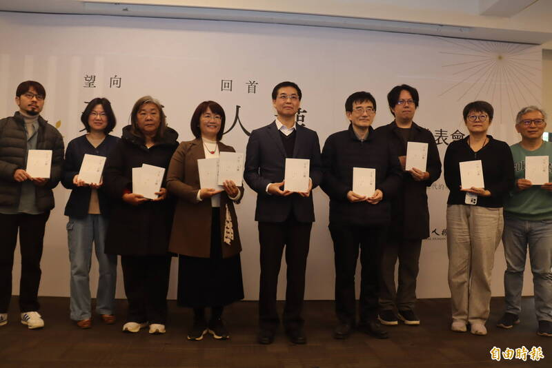

本院教育研究所邱文彬教授榮獲114年度國科會傑出研究獎
本院教育研究所邱文彬教授榮獲114年度國科會傑出研究獎，全院師生同感榮耀。本院並於3月10日舉行社科院論壇，邀請邱文彬教授向全院師生分享研究心得與經驗。
閱讀全文本院教育研究所邱文彬教授榮獲114年度國科會傑出研究獎，全院師生同感榮耀。本院並於3月10日舉行社科院論壇，邀請邱文彬教授向全院師生分享研究心得與經驗。
閱讀全文恭賀本院政治學研究所黃韋豪副教授、教育研究所宋呈澔副教授、社會學系李宛儒副教授通過升等，全院師生同表喜悅與祝賀，恭喜老師們。
閱讀全文
國立中山大學於昨日舉辦「NSYSU-SOAS 全球公民權碩士學位學程」招生說明會，正式與全球社會科學與區域研究的權威學府——倫敦大學亞非學院（SOAS University of London）正式啟動深度學術合作
閱讀全文
延續國立中山大學與英國SOAS的合作基礎，以及教育部「UAAT聯盟計畫」指導下，兩校於115年2月6日舉辦「全球南方研究」微學程工作坊，邀集台英兩校教師共同交流課程設計與教學經驗
閱讀全文台灣教育研究學會暨世界教育研究學會2026國際學術研討會：會議日期：115年10月15日(星期四)至10月18日(星期日)；會議地點：國立中山大學(高雄市鼓山區蓮海路70號)。 徵稿期間：即日起至115年4月30日(星期四)；錄取通知日期：115年6月1日(星期一)；聯絡人資訊：tera@mail.nsysu.edu.tw
研討會網站Alison Des Forges Symposium on "Peace and J ustice in the Taiwan Strait"，This symposium will explore the complex cultural, historical and political interactions among the Republic of China, People’s Republic of China and the United States with a view to maintaining de facto peace and defending human rights on both sides of the Taiwan Strait.線上參與報名網址：https://reurl.cc/5b7EE6 。
完整資訊為與全院師生分享傑出研究心得，本院特於115年3月10日，邀請國科會114年度傑出研究獎得主邱文彬教授主講【社科院論壇3月場】，在 陳美華院長的引言後，邱文彬教授透過大量的傑出研究實際範例，與全院師生分享現今傑出研究具備的特性與態樣。
完整資訊
當現代人依賴GPS與衛星定位航行時，完全依循星象、洋流與風向前進的帛琉傳統雙體帆船 Alingano Maisu（無私分享號），於115年2月15日自帛琉啟航，正橫越西太平洋，朝臺灣駛來。 作為本次活動策劃與執行核心，中山大學不僅將舉辦迎船儀式，更將南島航海智慧納入教育實踐。中山大學教育研究所教授謝百淇指出，近年透過教育部計畫， 已系統性與國際航海大師合作，將傳統星象導航與海洋倫理轉化為師資培育與課程設計內容。本次更首度將傳統航道與都會型港口串聯，讓高雄港成為星象航海的現場教室。
完整資訊
政治所「洞察國際局勢」系列講座2月份邀請兩位來自大韓民國的政治學者Mi Hwa Hong教授(韓國國民大學)與Nam Kyu Kim教授(高麗大學)，就「外部安全威脅對男性或女性領導人之態度研究」，以及「民粹與國際人權組織：韓國的調查實驗」為講題發表研究心得。
閱讀全文
國家人權博物館於115年3月7日辦理「望向天光 回首人權」新書發表會，本院社會系林傳凱助理教授與政治大學台史所薛化元教授共同參與「轉型正義的人權記憶與展望」深度對話活動。
閱讀全文林業及自然保育署屏東分署日前出版新書《不馴之森——雙流林業紀事》，這部非虛構文學作品深入南台灣山林田野， 透過作者鄒欣寧、臺灣大學地理環境資源學系副教授洪廣冀，以及出身獅子鄉雙流tjiqarabang社、國立中山大學社會學系副教授tjuku ruljigaljig（李馨慈）等人， 一同揭開一段因「林相變更」而起、塵封於屏東雙流土地的真實故事。
完整資訊創意是天生的，還是後天能培養出來？國立中山大學教育研究所特聘教授莊雪華的最新研究結果發現，相信創意可透過努力發展的人，更傾向接納異質文化、勇於探索新奇經驗，也更有創新創造力；。此項發現為全球教育心理學提供實證支持與參考，成果獲登國際知名期刊《思考技能與創造力》（Thinking Skills and Creativity）。
完整資訊